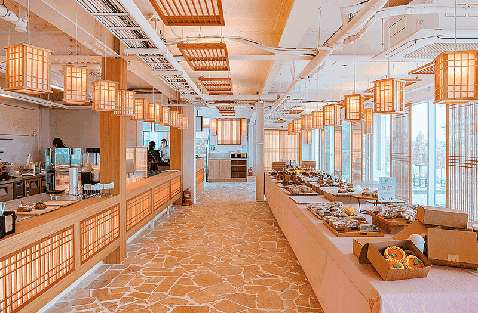

Haejigae Cafe in Aewol: A Jeju Coast Stop for Sea Views and Sunset Light
At a glance: Haejigae Cafe is an Aewol-area café known in recent Korean travel listings for its ocean views and sunset atmosphere. It is a good candidate for a relaxed coastal break, especially if you want a scenic place to pause during a day around western Jeju.
- Address: 52 Aewolbukseo-gil, Aewol-eup, Jeju-si, Jeju-do, South Korea
- Google rating: 4.8/5 from 2,358 reviews at the time of the supplied listing data; ratings can change.
- Official channel: Instagram, linked below.
Why stop at Haejigae Cafe?
Aewol is a popular stretch of Jeju’s western coast, and Haejigae Cafe is presented in Korean travel searches as an ocean-view café with a particular appeal around sunset. That makes it less of a destination for ticking off a specific drink and more of a place to build into a scenic break: arrive, take in the coast, and give yourself time to enjoy the view rather than rushing straight back onto the road.
The café also appears in local search results as a bakery or dessert stop. Specific items and availability can change, so it is better not to plan your visit around a particular pastry unless you have checked the café’s latest posts. If you are choosing between a daytime visit and late afternoon, the latter may suit travelers hoping for warm evening light. Sunset views depend on weather, season, and visibility, however, and a cloudy or hazy day can change the experience considerably.
With a Google rating of 4.8 from 2,358 reviews in the supplied data, Haejigae has attracted substantial visitor feedback. Treat that score as a useful snapshot, not a guarantee: ratings and review counts move over time, and what matters most may be whether you want a coastal setting, a café break, or a place to photograph the changing light.
How to plan your visit
Haejigae is at 52 Aewolbukseo-gil in Aewol-eup, Jeju-si. For navigation, use the Google Maps link below and check that the destination pin matches the café name before setting off. The English address can be awkward to enter into some map apps; copying the Korean name, 해지개, may help you confirm that you have the right place.
Consider pairing the café with other stops in the Aewol area rather than making a long cross-island detour solely for coffee. If you are hoping to see the sunset, check the forecast and local sunset time for your travel date, and leave a little flexibility in your schedule. A scenic café can be busier when many visitors arrive for the same light, so a quieter time of day may be preferable if you value a more relaxed stop.
Before you go, check the official Instagram for current operating information, recent photos, and any announcements. The materials available here do not confirm opening hours, menu details, prices, parking arrangements, or reservation policies, so verify those directly rather than relying on old travel posts. If you have dietary requirements, ask the café about ingredients and availability before ordering.
What foreign visitors should know
Jeju cafés can be easiest to visit when you plan the location as part of a broader route, especially if your itinerary includes several stops. Do not assume that an English-language map search will display every detail consistently; compare the pin, café name, and address. Keeping the Korean name or address saved on your phone can make it easier to show your destination if you need help confirming it.
Recent Korean search results describe Haejigae as a sea-view and sunset-oriented café and mention bakery-style offerings, but online descriptions may not reflect the day’s actual selection. Use them as clues about the atmosphere, not as a current menu. The café’s Instagram is the best available official source in this listing for checking what is happening now.
For photographs, be considerate of other guests and staff, and avoid blocking shared areas while taking pictures. If the view is your main reason for visiting, remember that coastal weather can shift quickly; having another nearby stop in mind makes the outing worthwhile even if the horizon is cloudy.
Good to know
- Best fit: Travelers looking for a coastal café break in Aewol, with sunset atmosphere as a possible bonus.
- Check before visiting: Current hours, menu, prices, parking, and any other visit policies are not confirmed here; consult the official Instagram.
- For navigation: Search “Haejigae Cafe” or 해지개 and verify the map pin against the address.
- Rating context: The supplied Google data shows 4.8/5 from 2,358 reviews. Treat this as time-sensitive information.
- Weather matters: Ocean views and sunset colors are dependent on visibility and conditions on the day.
FAQ
Is Haejigae Cafe a good place to watch the sunset?
It is described in recent Korean travel searches as an Aewol café popular for sea views and sunset atmosphere. The actual view depends on weather, visibility, and timing.
Does Haejigae Cafe serve bakery items?
Recent Korean search results describe it as a bakery or dessert café, but this listing cannot confirm the current selection. Check the café’s Instagram for up-to-date information.
Where can I confirm the café’s current details?
Use the Google Maps listing for the location and the official Instagram for the café’s latest updates. Check directly for hours, menu, prices, and visit arrangements.